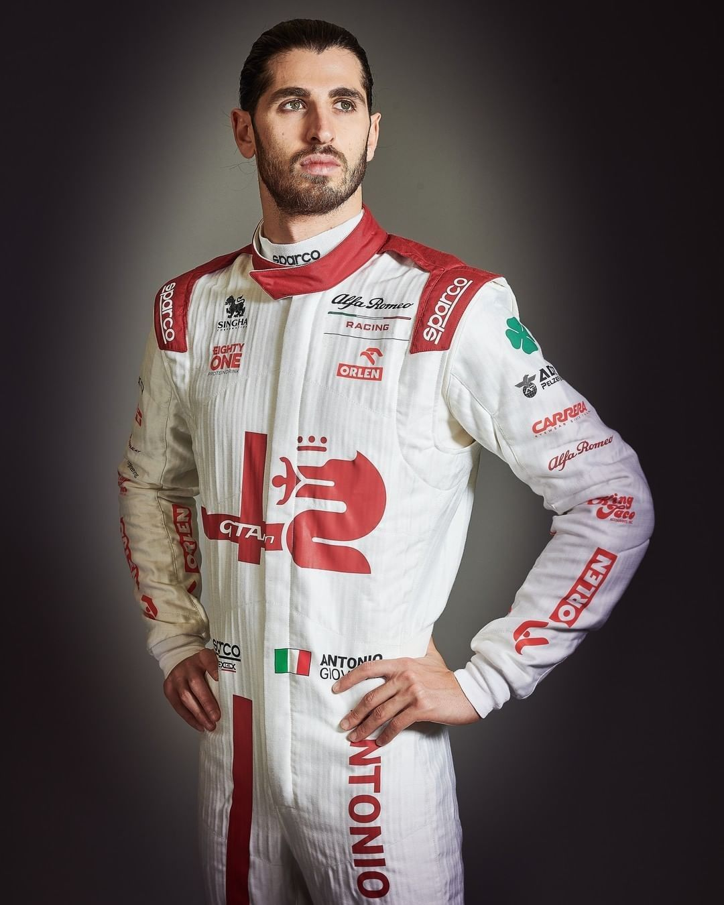
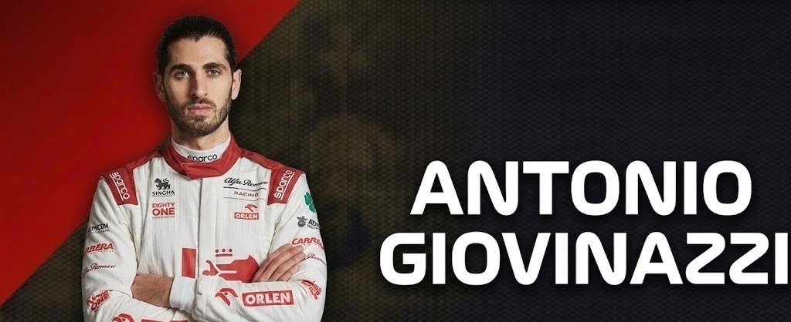
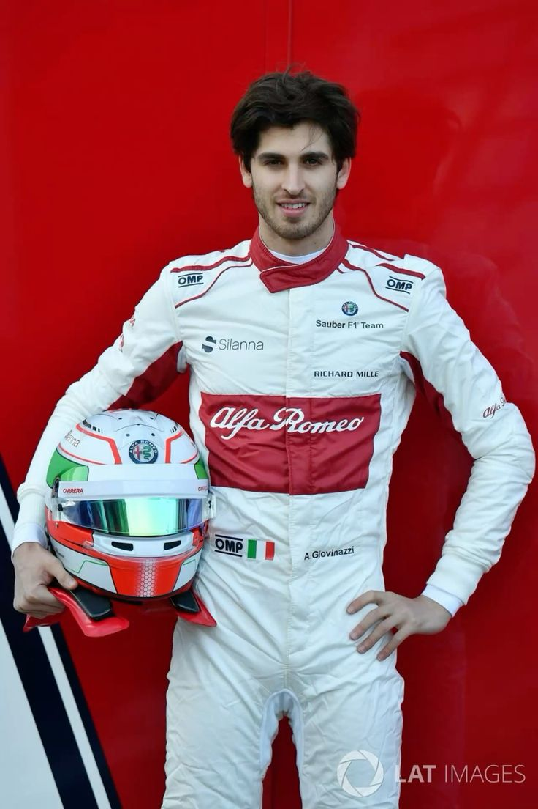
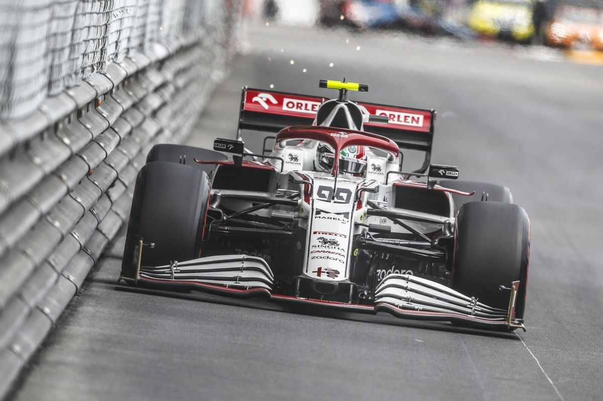

DRIVER PRESENTATION

Desarrollo Técnica y Disciplina Competitiva de Antonio Giovinazzi en la Estructura de Alfa Romeo
Antonio Giovinazzi inició su trayectoria destacando por una técnica de clasificación refinada que lo llevó a ser subcampeón de la GP2 en 2016. Como pilar del programa de desarrollo de Ferrari, se integró a Alfa Romeo Racing en 2019, donde demostró ser un piloto de gran consistencia y un activo valioso para la evolución técnica del equipo. Durante el ciclo 2021, Giovinazzi destacó por su capacidad para llevar el monoplaza a sesiones finales de clasificación (Q3) y por su ritmo sólido en las fases iniciales de los grandes premios. Su enfoque disciplinado y su feedback técnico preciso han sido fundamentales para la puesta a punto del vehículo en circuitos de variada exigencia aerodinámica. Giovinazzi representa el profesionalismo y la adaptabilidad técnica de la escuela italiana de pilotos en la era moderna de la Fórmula 1.

2017: Giovinazzi debuta de forma inesperada con Sauber, impresionando por su madurez y ritmo constante.

Monza 2019: Antonio logra puntuar ante su público italiano, un momento de gran orgullo nacional para el piloto.
2021: Varias actuaciones sobresalientes en clasificación llevando el Alfa Romeo al top 10 contra todo pronóstico.